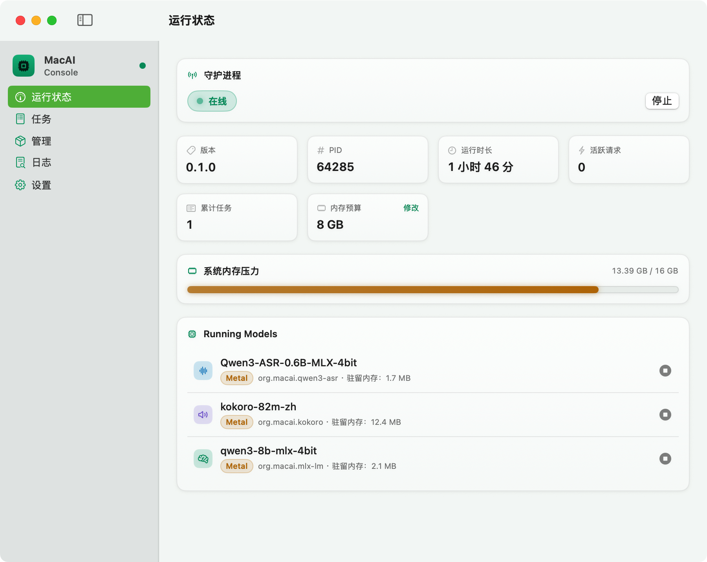
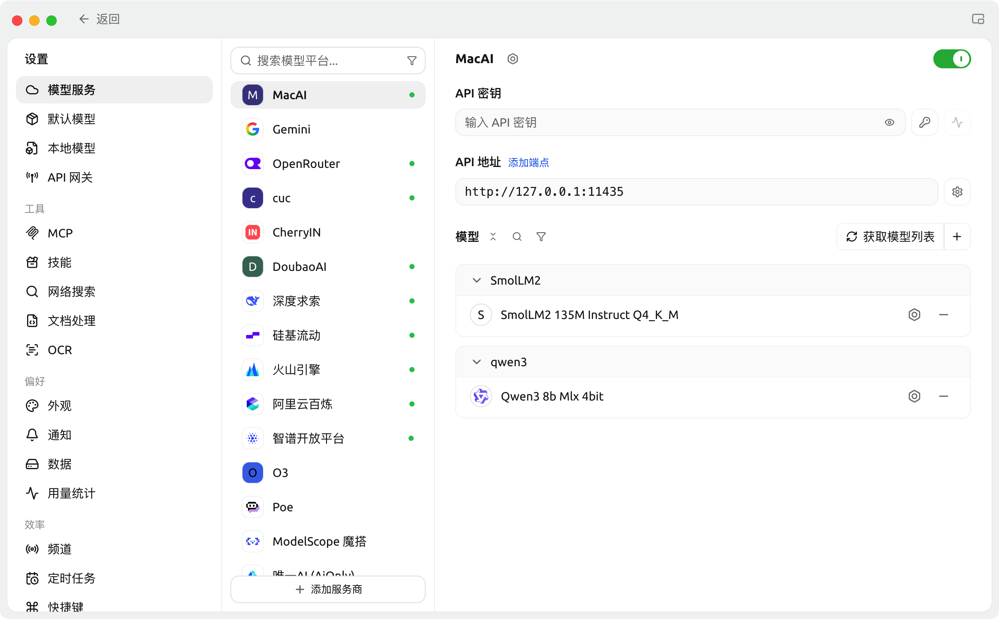

文档目录
系统定位与要求
MacAI 是面向 Apple Silicon 的本地 AI 运行管理系统。它将大语言模型（LLM）、语音转文字（STT）和文字转语音（TTS）统一装进一个 Rust 守护进程 aiworkd（默认监听 127.0.0.1:11435），在本机通过 Metal、MLX 与 Core ML 加速完成推理，并以 OpenAI 兼容格式对外提供服务——所有数据均在 Mac 本地处理，断网可用。
客户端分工
在 MacAI 中，所有客户端均为无状态客户端，不维护模型或推理状态，所有界面数据与操作均经由 aiworkd 的 HTTP API 进行：
| 客户端 | 适合场景 | 职责说明 |
|---|---|---|
| MacAIConsole (GUI) | 日常使用与可视化观测 | SwiftUI 原生图形控制台：一键安装引擎、推荐模型下载、模型启停、内存压力实时监控、会话任务流与日志过滤。 |
| macai CLI | 终端脚本与自动化 | Rust 命令行客户端，覆盖模型完整生命周期操作，支持单次提问、交互式对话、音频转写与语音合成。 |
| OpenAI SDK / 第三方客户端 | 应用接入 | CherryStudio、Hermes 等第三方工具，将 base_url 配置为本机 http://127.0.0.1:11435/v1 即可直接接入。 |
系统与运行环境要求
- 硬件：Apple Silicon Mac（M1 及之后芯片）
- 系统：macOS 14 (Sonoma) 或更高版本
- DMG 安装：自包含
aiworkd、macai、uv和全部 Runner 适配器，开箱即用，无需预装 Rust 或 Python 环境。 - 源码构建额外依赖：
- Rust stable toolchain（建议
rustup update stable） - Xcode Command Line Tools（
xcode-select --install） - CMake（
brew install cmake）——仅编译 whisper.cpp 原生引擎时必需 - Python 3.12（运行适配器单元测试时使用；实际生产 Runner 的环境由内置 uv 独立管理）
- Rust stable toolchain（建议
安装与启动
方式一：DMG 安装包（推荐普通用户）
- 从 GitHub Releases 下载最新的
MacAIConsole.dmg。 - 双击打开 DMG，将
MacAIConsole.app拖入「应用程序（Applications）」文件夹。 - 首次打开若遇 Gatekeeper 拦截（提示“已损坏，无法打开”或“未知的开发者”），在终端执行以下命令清除隔离标记：
或前往 macOS「系统设置 → 隐私与安全性」，滑至最下方“安全性”区域点击「仍要打开」。
xattr -cr /Applications/MacAIConsole.app
- 启动应用后，内置的
aiworkd会自动随之拉起，无需任何命令行操作。
方式二：从源码构建运行（开发者）
1. 克隆代码仓库并编译整个 Workspace：
git clone https://github.com/GuanXuzeng/MacAI.git cd MacAI cargo build --release --workspace
产物将位于 target/release/，包括守护进程 aiworkd 与命令行客户端 macai。
2. 启动 daemon：
./target/release/aiworkd
守护进程启动后默认监听 http://127.0.0.1:11435。另开一个终端窗口即可使用 CLI 验证连通性：
./target/release/macai status ./target/release/macai list ./target/release/macai ps
3. 运行 MacAIConsole GUI：
- 一键联动构建并启动（推荐）：
该脚本自动编译 Rust 后端与 SwiftUI 前端，组装
cd apps/MacAIConsole scripts/build-app.sh release
uv与runners/目录至apps/MacAIConsole/build/MacAIConsole.app并自动拉起。如需打包发布用 DMG：scripts/build-app.sh dmg。 - 快速开发模式：在 daemon 已经在运行的情况下，直接在
apps/MacAIConsole目录下执行：cd apps/MacAIConsole swift run
http://127.0.0.1:11435。若启动 GUI 时守护进程未运行，GUI 会按顺序探测本地构建产物：AIWORKD_PATH 环境变量 → target/release/aiworkd → target/debug/aiworkd，并自动拉起守护进程。五分钟跑通主线
以下以推荐的大语言模型 MiniCPM5 2B MLX 4-bit（约 2.5 GB）为例，带你完整走通从引擎配置、模型下载到推理调用的全流程：
- 安装引擎：打开 MacAIConsole，进入左侧「管理」页。在顶端「引擎」区域找到
mlx-lm，点击「安装」。Python 依赖由内置uv自动隔离部署，无需配置系统 Python。 - 下载模型：在推荐模型列表中找到 MiniCPM5 2B MLX 4-bit，点击「下载」。后台由 daemon 自动进行断点续传下载并完成注册。若网络环境较慢，可先在「设置」页将下载源切换为国内镜像
https://hf-mirror.com。 - 启动加载：模型下载完成后，在模型卡片上点击「启动」，等待状态变为常驻（resident）。此时在「运行状态」页可实时查看到其常驻内存（RSS）与 Metal 加速状态。
- 发起对话验证：
# ① 使用 macai CLI macai chat MiniCPM5-2B-MLX-4bit "用一句话介绍你自己" # ② 使用 OpenAI 兼容 API curl http://127.0.0.1:11435/v1/chat/completions \ -H 'Content-Type: application/json' \ -d '{"model":"MiniCPM5-2B-MLX-4bit","messages":[{"role":"user","content":"Hello"}]}'
调用成功后，在 GUI 的「任务」页中即可实时观测到本次请求的耗时、首 Token 延迟与详细输入输出。
控制台导览

MacAIConsole 主界面。作为无状态客户端，界面呈现的数据全部实时来自 daemon。
| 页面 | 核心功能与观测指标 |
|---|---|
| 运行状态 | 查看 daemon 版本与 PID、内存预算设定、系统内存压力折线图（5 分钟滑动窗口）、活跃请求计数、已加载模型的常驻内存（RSS）与加速设备（Metal / ANE / CPU）。点击条目可进入模型详情设置。 |
| 任务 | 实时展示 Chat / STT / TTS 的会话请求流，保留最近 100 条有界任务。推理模型的思考过程（reasoning_content）与最终回答分区显示，呈现请求各阶段耗时。 |
| 管理 | 控制台核心枢纽：置顶展示 7 大 Runner 引擎环境状态与安装卸载控制；提供官方精选推荐模型卡片（一键下载注册）；支持导入本地模型或通过 URL 远端拉取；提供单文件 Script Runner 在线创建入口。 |
| 日志 | 聚合展示 GUI 与 daemon 本地持久化日志，支持按 Info / Debug 过滤及日志级别着色；提供快捷按钮直接在访达中定位日志文件。 |
| 设置 | 配置外观主题（跟随系统 / 明亮 / 暗黑）、后台 daemon 自动拉起开关、自定义内存预算、网络代理、下载源切换（官方源 / hf-mirror / 自定义）、恢复已忽略的引擎/模型条目，并在「关于」中检查应用更新。 |
MacAIConsole 在菜单栏常驻图标，支持随时查看后台守护进程状态并执行一键启停。应用内更新支持 DMG 自动下载、SHA-256 校验与无缝热重启。
模型获取与生命周期
推荐模型清单
| 类型 | 模型名称 | 驱动引擎 (Runner) | 预估内存 | 说明 |
|---|---|---|---|---|
| LLM | MiniCPM5 2B MLX 4-bit 推荐 | org.macai.mlx-lm | ~2.5 GB | 端侧旗舰大模型，长上下文与工具调用优化，Metal 原生加速 |
| LLM | 任意兼容 GGUF | org.macai.llama.cpp | 视权重而定 | 支持本地导入任意兼容的 GGUF 格式模型 |
| STT | Whisper Large v3 Turbo Q5 推荐 | org.macai.whisper.cpp | ~570 MB | 多语言高速转写，支持可选 Core ML / Metal 加速 |
| STT | Qwen3-ASR 0.6B MLX 4-bit 推荐 | org.macai.qwen3-asr | ~800 MB | 新一代语音识别，中文与多语言混合转写精度优异 |
| STT | sherpa-onnx Zipformer zh-int8 | org.macai.sherpa-onnx | ~400 MB | 中文流式分块识别，长音频内存极其平稳，纯 CPU 低功耗运行 |
| TTS | Kokoro 82M zh 推荐 | org.macai.kokoro | ~400 MB | 高品质语音合成，内置 20+ 款中英文音色，支持中英混读 |
| TTS | Qwen3-TTS 0.6B CustomVoice 4-bit 推荐 | org.macai.qwen3-tts | ~1.7 GB | 内置 9 款官方角色音色，文本支持逗号携带情感控制指令 |
| TTS | macOS 内置语音 | 系统 Provider macos_say | 系统级（极小） | 零下载开销，即刻发声，适合快速链路冒烟 |
三种获取与导入方式
- 推荐模型一键下载：在「管理」页点击卡片上的「下载」，daemon 负责断点续传下载并自动注册。对不需要的条目可右键忽略。
- 远端仓库下载：点击管理页顶部的「+ 添加模型 → 在线下载」，输入 Hugging Face 或 ModelScope 的仓库 ID / URL，预览文件与体积后下载至本地模型仓库。下载后需手动点击启动注册。
- 导入本地已有模型：单文件（
.gguf/.bin）可通过「添加模型 → 本地文件」直接选择；目录型模型（MLX 目录、sherpa-onnx 等）复制到本地模型受管目录对应子目录后，使用 CLI 或在管理页完成注册。
模型注册与路由语义
- 目录命名约束：目录型模型（MLX、sherpa-onnx、Qwen3 等）的模型 ID 必须与目录名完全一致；单文件 GGUF 模型无此限制。
- 静态目录检测器：daemon 通过预设 manifest 静态探测目录签名以确定归属 Runner，无法识别的目录将直接拒绝注册，防止静默错误；可用
macai inspect <目录>查看诊断。 - 硬选择原则：命令行或 API 显式通过
--provider指定引擎属于硬选择，若目标 Provider 不可用将直接报错并给出原因，绝不进行静默降级。 - 默认参数持久化：LLM 注册项默认上下文为 4096，默认采样参数 temperature 为 1.0、top_p 为 0.95，可在模型详情页修改并持久化生效。
模型生命周期语义对照
| 操作 | 语义 | 磁盘模型文件 |
|---|---|---|
load | 注册新模型到 SQLite 并立即加载进内存 | 保持不变 |
start | 将 SQLite 注册表中已有的模型拉起加载到内存 | 保持不变 |
unload (stop) | 停用后端 Runner worker，释放常驻内存，保留注册表记录 | 保持不变 |
remove (rm) | 从 SQLite 注册表中注销该模型记录 | 保持不变（文件保留，可重新注册） |
rename | 重命名模型 ID（运行中的模型将先安全停用） | 保持不变（Profile 绑定模型不支持改名） |
内存预算与空闲驻留机制
模型在内存中的驻留由 Lease 锁 与 Keep-Alive Reaper 共同管理：
- 每个请求处理期间模型持有租约（lease count > 0），手动卸载、空闲超时回收和 LRU 逐出绝不会打断正在进行中的推理请求。
- 每个模型支持配置
keep-alive空闲驻留时间（例如0用完即卸、5m、2h、always永久驻留）。 - daemon 的全局内存预算默认计算公式为
min(RAM×0.75, RAM−8GB)，超过预算时按最近最少使用（LRU）原则自动逐出空闲模型。
对话 Chat 实操
1. 控制台观测
发起对话后，「任务」页会实时滚动展示会话状态；推理模型（如 DeepSeek 系）的思维链（Thinking process）会通过独立卡片折叠/展开，不与最终回复混排。模型详情页可右键点击「使用示例」复制现成 API 请求代码。
2. 命令行调用
# 单次提问（无记忆模式） macai chat local-model "请用一句话解释量子计算" --temperature 0.2 # 交互式终端多轮对话（保留上下文），Ctrl-D 退出 macai run local-model --max-tokens 512
3. HTTP API 与流式输出
标准端点 POST /v1/chat/completions，设置 "stream": true 即可开启逐 Token SSE 流式响应，流以 data: [DONE] 结束：
curl http://127.0.0.1:11435/v1/chat/completions \ -H 'Content-Type: application/json' \ -d '{ "model": "MiniCPM5-2B-MLX-4bit", "messages": [{"role": "user", "content": "你好"}], "stream": true }'
session_id（不透明字符串）标明会话连续性。MLX-LM 对公共前缀 token 仅做增量 prefill，llama.cpp 利用 --cache-reuse 分块命中缓存，大幅降低长对话下的首 Token 延迟（TTFT）。注意：Metal 底层数值精度的细微差异可能使缓存命中时的
temperature=0 输出与全量重算偶发存在细微差异。4. Python OpenAI SDK 接入
from openai import OpenAI
client = OpenAI(
base_url="http://127.0.0.1:11435/v1",
api_key="local", # 本地无鉴权，占位即可
)
response = client.chat.completions.create(
model="MiniCPM5-2B-MLX-4bit",
messages=[{"role": "user", "content": "Hello!"}],
)
print(response.choices[0].message.content)语音识别 STT 实操
MacAI 在音频接入入口（crates/ai-daemon/src/audio.rs）统一采用纯 Rust 实现的 Decode-on-Ingest 架构，支持上传 wav / mp3 / flac / ogg / m4a 常见音频格式。音频在进入 daemon 时统一归一化为 16kHz 16-bit 单声道标准 PCM WAV 流，下游所有 Provider 契约极其精简，均只接收标准 WAV 数据流。
引擎选型指南
| 引擎 | 适用语言 | 特点与硬件加速 |
|---|---|---|
org.macai.whisper.cpp | 多语言通用 | 使用 .bin 格式权重，支持可选 Core ML 编码器加速（ANE），无 Core ML 时自动回退至 Metal。 |
org.macai.qwen3-asr | 多语言（中英优异） | 基于 MLX / Metal GPU 加速，中英文混合、方言与背景噪音下识别精度优异。 |
org.macai.sherpa-onnx | 专注中文 | 基于 streaming Zipformer 中文 int8 模型，流式分块解码，长录音内存平稳，纯 CPU 低功耗运行。 |
命令行转写
# 转写本地音频文件 macai transcribe meeting.m4a --model Whisper-Large-v3-Turbo-Q5 --language zh
HTTP API 调用
curl http://127.0.0.1:11435/v1/audio/transcriptions \ -F "file=@/path/to/meeting.wav" \ -F "model=Qwen3-ASR-0.6B-MLX-4bit" \ -F "language=zh"
file=@...）。若传路径字符串、URL 或空文件，daemon 将返回 HTTP 400 并明确给出正确用法。语音合成 TTS 实操
| 引擎 | 音色数量 | 特点与交互能力 |
|---|---|---|
org.macai.kokoro | 20+ 款中英音色 | 发音自然度高，长文本自动按句切片分段合成，CLI 默认音色为 zf_001。 |
org.macai.qwen3-tts | 9 款内置角色音色 | 表现力强，支持在合成文本开头用逗号携带情感指令（如 Vivian, very happy）。 |
macos_say | 系统内置音色 | 内置系统 Provider，零下载零加载开销，快速冒烟测试。 |
音色滚轮切换与试听
MacAIConsole 的运行状态页与模型详情页提供了基于滚轮优化的快速音色选择器：滚轮滚动停下后防抖持久化为默认音色并自动发声试听（试听播放随时会被下一次滚动打断）。命令行下可随时查询与设置默认音色：
# 列出模型支持的所有音色清单 macai voice kokoro-82m-zh # 设置默认音色 macai voice kokoro-82m-zh zf_001 # 清除默认音色设置 macai voice Qwen3-TTS-0.6B-CustomVoice-4bit --clear
语音合成调用
# CLI 合成并输出至本地 WAV 文件 macai speak "你好，这是通过本地模型合成的语音。" --model kokoro-82m-zh --output hello.wav # Qwen3-TTS 情感指令合成 macai speak "Vivian, very happy 祝你今天过得愉快！" --model Qwen3-TTS-0.6B-CustomVoice-4bit # HTTP API 调用 curl http://127.0.0.1:11435/v1/audio/speech \ -H 'Content-Type: application/json' \ -d '{"model":"kokoro-82m-zh","input":"你好","voice":"zf_001"}' \ --output speech.wav
Qwen3-TTS 官方内置音色列表：Vivian、Serena、Uncle_Fu、Dylan、Eric、Ryan、Aiden、Ono_Anna、Sohee。
Runner 架构与环境管理
为了保证系统可靠性，MacAI 的所有生产推理引擎均收敛至 Runner 插件架构。每个 Runner 是一个独立的操作系统子进程（以 org.macai.* 命名），由 aiworkd 统一进行环境依赖配置、启动心跳探测与 IPC 进程生命周期监管。
- 进程级故障隔离：推理过程中哪怕底层 C++ 引擎发生段错误（Segmentation fault）或 Python worker 触发 OOM，受影响的仅是该子进程。
aiworkd守护进程本身始终存活，并将异常转化为结构化的backend_crashed错误返回给客户端，其余并发运行的模型完全不受影响。 - 统一环境管理：C++ 原生二进制构建（whisper.cpp）与 Python 依赖环境（uv 受管）共享统一的安装接口
POST /api/runners/{runner}/install。
| Runner ID | 负责模型 | 加速硬件 | 环境管理机制 |
|---|---|---|---|
org.macai.llama.cpp | GGUF 格式 LLM | Metal / Accelerate | 下载验证过的预编译固定 release 二进制（sha256 校验） |
org.macai.whisper.cpp | .bin 格式 STT | Core ML / Metal | 下载官方源码归档并在本机 CMake 静态编译常驻 server |
org.macai.mlx-lm | MLX 格式 LLM | MLX / Metal | uv 锁定部署 Python 虚拟环境 |
org.macai.qwen3-asr | Qwen3-ASR 模型 | MLX / Metal GPU | uv 锁定部署 Python 虚拟环境 |
org.macai.sherpa-onnx | Zipformer int8 STT | CPU | uv 锁定部署 Python 虚拟环境 |
org.macai.kokoro | Kokoro-82M TTS | MLX / Metal GPU | uv 锁定部署 Python 虚拟环境 |
org.macai.qwen3-tts | Qwen3-TTS 0.6B | MLX / Metal GPU | uv 锁定部署 Python 虚拟环境 |
4. 安装 llama.cpp 引擎（Runner）
llama.cpp Runner（org.macai.llama.cpp）用于高效执行 GGUF 格式的 LLM 模型。可通过管理页一键安装，或调用 API：
curl -X POST http://127.0.0.1:11435/api/runners/org.macai.llama.cpp/install
安装过程会自动同步 uv 适配器环境，并下载验证过的 llama.cpp 预编译二进制到：
~/Library/Application Support/MacAIConsole/Engines/org.macai.llama.cpp/。
若本机已有自定义编译的二进制，可通过环境变量显式覆盖：
export MACAI_LLAMA_SERVER=/absolute/path/to/llama-server
注册并运行本地 GGUF 模型
./target/release/macai load /path/to/model.gguf \ --id local-model \ --type llm \ --keep-alive 5m \ --context-length 4096 ./target/release/macai chat local-model "Hello" --temperature 0.2 ./target/release/macai unload local-model
5. 安装 whisper.cpp 引擎（Runner）
curl -X POST http://127.0.0.1:11435/api/runners/org.macai.whisper.cpp/install ./scripts/download-whisper-model.sh base
安装流程会校验官方源码归档，在临时暂存区构建静态链接的常驻 whisper-server，随后原子替换至：
~/Library/Application Support/MacAIConsole/Engines/org.macai.whisper.cpp/build/bin/whisper-server .build/models/ggml-base.bin
覆盖已有 server 二进制：export MACAI_WHISPER_SERVER=/absolute/path/to/whisper-server。
注册 .bin 模型若省略 --provider，将默认路由至 org.macai.whisper.cpp。若将编译好的 Core ML .mlmodelc 目录置于 .bin 同级并同名，将优先走 ANE 硬件加速，否则自动 Metal 回退。
6. 准备 Qwen3-ASR 0.6B
Qwen3-ASR 由 org.macai.qwen3-asr 提供，走 MLX/Metal 加速。Python 环境可通过管理页安装，或在仓库根目录下手动执行：
uv sync --project runners/qwen3-asr --locked --no-dev
推荐模型（mlx-community/Qwen3-ASR-0.6B-4bit）放进 ~/Library/Application Support/MacAIConsole/Models/stt/。注册时模型 ID 必须与目录名一致：
./target/release/macai load \ "$HOME/Library/Application Support/MacAIConsole/Models/stt/Qwen3-ASR-0.6B-MLX-4bit" \ --id Qwen3-ASR-0.6B-MLX-4bit \ --type stt \ --provider org.macai.qwen3-asr \ --keep-alive always ./target/release/macai transcribe meeting.wav --model Qwen3-ASR-0.6B-MLX-4bit --language zh
7. 准备 sherpa-onnx zh-int8-2025（Runner）
sherpa-onnx 由 org.macai.sherpa-onnx 提供服务，纯 CPU 运行。手动配置 Python 环境：
uv sync --project runners/sherpa-onnx --locked --no-dev
模型目录必须完整保留以下四个文件：
sherpa-onnx-streaming-zipformer-zh-int8-2025-06-30/ ├── tokens.txt ├── encoder.int8.onnx ├── decoder.onnx └── joiner.int8.onnx
模型下载解包与注册：
curl -L -o sherpa-onnx-model.tar.bz2 \ https://github.com/k2-fsa/sherpa-onnx/releases/download/asr-models/sherpa-onnx-streaming-zipformer-zh-int8-2025-06-30.tar.bz2 tar xf sherpa-onnx-model.tar.bz2 && rm sherpa-onnx-model.tar.bz2 ./target/release/macai load ./sherpa-onnx-streaming-zipformer-zh-int8-2025-06-30 \ --id sherpa-onnx-streaming-zipformer-zh-int8-2025-06-30 \ --type stt \ --provider org.macai.sherpa-onnx \ --keep-alive always
8. 准备 Kokoro TTS
Kokoro 由 org.macai.kokoro 提供服务，MLX 加速。手动部署环境：
uv sync --project runners/kokoro --locked --no-dev
模型 Kokoro-82M-zh-MLX 放入 ~/Library/Application Support/MacAIConsole/Models/tts/ 并注册：
./target/release/macai load \ "$HOME/Library/Application Support/MacAIConsole/Models/tts/kokoro-82m-zh" \ --id kokoro-82m-zh \ --type tts \ --provider org.macai.kokoro \ --keep-alive always
9. 准备 Qwen3-TTS CustomVoice（Runner）
Qwen3-TTS 由 org.macai.qwen3-tts 驱动，MLX/Metal 加速。手动部署环境：
uv sync --project runners/qwen3-tts --locked --no-dev
模型目录（mlx-community/Qwen3-TTS-12Hz-0.6B-CustomVoice-4bit）放入 Models/tts/ 并注册：
./target/release/macai load \ "$HOME/Library/Application Support/MacAIConsole/Models/tts/Qwen3-TTS-0.6B-CustomVoice-4bit" \ --id Qwen3-TTS-0.6B-CustomVoice-4bit \ --type tts \ --provider org.macai.qwen3-tts \ --keep-alive always ./target/release/macai speak Qwen3-TTS-0.6B-CustomVoice-4bit "你好，这是本地模型。"
speed 参数仍按 0.25..=4.0 进行输入校验，但因上游 mlx-audio 库限制目前不改变合成速率；首版暂不含声音克隆。10. 准备 MLX-LM（Runner）
MLX LLM 由 org.macai.mlx-lm 提供服务，通过 Apple Metal 原生加速。手动部署环境：
uv sync --project runners/mlx-lm --locked --no-dev
推荐模型（如 SmolLM2-135M 或 MiniCPM5-2B-MLX 目录）放入 ~/Library/Application Support/MacAIConsole/Models/llm/ 并注册：
./target/release/macai load \ "$HOME/Library/Application Support/MacAIConsole/Models/llm/SmolLM2-135M-Instruct-8bit" \ --id SmolLM2-135M-Instruct-8bit \ --type llm \ --provider org.macai.mlx-lm \ --keep-alive 5m
.gguf 单文件格式由 llama.cpp 加载；包含 config.json 与 safetensors 权重的目录型模型由 mlx-lm Runner 加载。自制 Script Runner 扩展
MacAI 支持通过单文件 Python 脚本快速扩展全新的模型或推理库：在「管理」页点击「新建 Runner」，从 Chat / STT / TTS 模板编辑一个带 PEP 723 依赖元数据的 .macai.py 文件：
- 依赖自动管理：支持直接粘贴官方
pip install或uv add依赖命令，uv 会自动解析完整的依赖树。 - AI 协作与本地导入：支持导入本地已有的
.py脚本，或一键复制专门为 AI 提示词设计的脚手架交由外部大模型帮你编写实现。 - 环境沙箱与持久化：保存时 daemon 对代码进行静态依赖和权限检查，在临时沙箱完成依赖 lock 与 sync，验证通过后作为标准包持久化存储至应用支持目录
Plugins/<runner-id>/。
samples/Hojo_TTS_Light_40M_sample.md。macai CLI 命令行参考
macai 全局参数 -a, --addr HOST:PORT 指定 daemon 地址，默认 127.0.0.1:11435。各子命令完整参数通过 macai <命令> --help 查看：
| 子命令 | 语法与参数 | 功能说明 |
|---|---|---|
status | macai status | 查询 daemon 运行状态、请求计数与系统内存概况 |
list (models) | macai list | 列出 SQLite 中已注册的全部模型及常驻状态 |
ps | macai ps | 列出常驻内存中的模型、实际 RSS 内存与硬件加速设备 |
providers | macai providers | 探测系统所有可用 Provider 及未就绪的具体原因 |
tasks | macai tasks [id] [--limit N] | 查看近期 Chat/STT/TTS 任务流水或单任务详情 |
load | macai load <path> --id <id> --type <t> | 注册并加载模型（支持 --keep-alive、--context-length 等） |
inspect | macai inspect <dir>... | 静态诊断模型目录归属并颁发 routing token |
start | macai start <model> | 把注册表中已有模型拉起加载到内存 |
unload | macai unload <model> | 停止 worker 释放内存，注册记录与文件完好保留 |
remove | macai remove <model> | 仅删除 SQLite 注册记录，磁盘源文件保持不变 |
rename | macai rename <old> <new> | 重命名模型 ID（运行中模型将先安全停用） |
keep-alive | macai keep-alive <model> <val> | 修改空闲驻留策略（0 / 5m / 2h / always） |
pull | macai pull <repo> <file> | 从 Hugging Face 下载单文件到模型仓库并自动注册 |
chat | macai chat <model> <msg> | 单次提问（支持 --system、--temperature） |
run | macai run <model> | 交互式多轮对话（保留上下文） |
transcribe | macai transcribe <file> | 识别音频，支持 --model、--language |
speak | macai speak <text> | 文字转语音，支持 --voice、--output |
voice | macai voice <model> [v] | 查看可用音色列表或设置默认音色（--clear 清除） |
logging | macai logging [info|debug] | 查询或动态切换日志输出级别 |
serve | macai serve | 检查后台服务是否已正常就绪 |
# 常用巡检组合
macai status && macai ps && macai tasks --limit 5HTTP API 与 OpenAI SDK
/v1/* 面向标准推理（OpenAI 兼容），/api/* 面向运行时控制与模型管理。服务本地运行无鉴权，调用方 api_key 可填任意占位字符串：
| 方法 | 端点路径 | 用途说明 |
|---|---|---|
| GET | /health | 健康检查 |
| GET | /v1/models | OpenAI 兼容模型列表（包含 provider 选择审计字段） |
| POST | /v1/chat/completions | 对话补全（支持 SSE 流式分块与 reasoning_content 思考分流） |
| POST | /v1/audio/transcriptions | 语音转文字（接收 multipart 音频字节） |
| POST | /v1/audio/speech | 语音合成（返回二进制 PCM WAV） |
| GET | /api/runtime | 运行时全局概览：内存预算、系统压力、常驻模型列表 |
| GET | /api/providers | 各 Provider 就绪状态与未就绪原因 |
| GET / POST / DELETE | /api/runners · /api/runners/{runner}/install | Runner 清单查询、环境依赖安装与卸载 |
| POST | /api/models/pull | 从 HF 或 ModelScope 下载模型文件 |
| POST | /api/models/inspect · remote/inspect | 本地目录探测诊断 / 远端仓库文件结构预览 |
| POST | /api/models/load | 注册新模型并持久化 Provider 选择理由 |
| POST | /api/models/{id}/load · unload · keep-alive · rename | 操作单个模型的生命周期状态 |
| GET / POST | /api/models/{id}/voices · /voice | 查询模型支持的音色清单 / 设置默认音色 |
| DELETE | /api/models/{id} | 删除指定模型的注册表记录 |
| GET | /api/tasks · /api/tasks/{id} | 查询近期有界任务流或单任务详细指标 |
| GET / POST | /api/logging | 获取或动态调整全局日志级别 |
| GET | /api/downloads/{progress_id} | 查询后台模型下载进度条数据 |
第三方应用接入
接入 CherryStudio
在 CherryStudio 中添加自定义 OpenAI 提供商，将 API 地址配置为 http://127.0.0.1:11435，点击「获取模型列表」按钮即可自动拉取当前已注册的所有可用模型 ID：

CherryStudio 接入配置示例。
为 Hermes Desktop 提供本地 TTS / STT
通过本地适配脚本即可将 MacAI 的语音能力无缝接入 Hermes Desktop 桌面助手，无需改动其核心代码。完整适配配置参见仓库文件：
samples/Hermes_TTS_STT_sample.md。
系统架构概览
macai CLI ────────────┐
MacAIConsole (SwiftUI) ├── HTTP ──> aiworkd ──> Runners ─┬── whisper.cpp / llama.cpp（受管原生引擎）
OpenAI-compatible SDK ┘ └── MLX / Kokoro / Qwen3 / sherpa-onnx
├── SQLite model registry
├── memory budget / LRU / keep-alive
├── bounded task history
└── local logsRuntime Authority 唯一性：在 MacAI 体系中，Rust 守护进程 aiworkd 是系统唯一的运行权威（Runtime Authority），统一承载模型注册、内存分配与回收、任务路由与对外 HTTP 接口。GUI 与 CLI 均是轻量无状态客户端，客户端的退出或重启不会中断后台正在处理的推理任务。
Runtime 调度与内存租约
- 模型 Lease 租约与 Busy Guard：
当某个模型开始处理推理请求时，daemon 为其增加 lease 引用计数。在此期间，无论是用户手动执行
unload、内存压力触发的 LRU 逐出，还是定时器触发的空闲 Reaper 回收，都会被 Busy Guard 拦截，必须等待全部请求完成并释放租约后才会执行卸载。 - 内存自适应预算：
默认预算公式为
min(RAM × 0.75, RAM - 8GB)，保留充足系统开销。当总常驻内存逼近阈值时，自动触发 LRU 算法逐出最近最少使用的空闲模型。可使用环境变量AIWORKD_MEMORY_BUDGET显式指定字节数。 - SQLite 持久化与内存索引： 模型元数据持久化存储于 SQLite，而在运行时由内存 HashMap 提供单源并发读取，保证服务即使重启也能完整恢复模型配置。
- 有界任务流记录： 系统在内存环形队列中维护最近 100 条终态任务，避免长时间运行造成内存无限制泄漏。
本地数据与环境变量
MacAI 的所有受管数据均集中在用户的 Application Support 目录下，删除该目录即完成完整数据重置：
~/Library/Application Support/MacAIConsole/ ├── Models/ # 本地模型仓库 │ ├── llm/ # MLX 格式 LLM 目录 │ ├── stt/ # Qwen3-ASR、sherpa-onnx 等 STT 目录 │ └── tts/ # Kokoro、Qwen3-TTS 等 TTS 目录 ├── Engines/ # llama.cpp 与 whisper.cpp 受管引擎构建产物 ├── Plugins/ # 用户自制 Script Runner 插件目录 ├── model-settings.json # GUI 本地展示与偏好设置 ├── models.db # SQLite 模型持久化数据库 └── logs/ # 本地日志 ├── aiworkd.log # 守护进程日志（5MB 轮换，保留一份 .1） └── gui.log # 控制台界面日志
常用环境变量参考
| 环境变量 | 类型 | 说明 |
|---|---|---|
AIWORKD_PATH | 路径 | 显式指定 GUI 探测和启动 aiworkd 二进制的路径 |
AIWORKD_MEMORY_BUDGET | 整数（字节） | 显式覆盖 daemon 内存预算上限 |
AIWORKD_HF_ENDPOINT | URL | Hugging Face 镜像地址（如 https://hf-mirror.com） |
MACAI_LLAMA_SERVER | 路径 | 显式指定本机现成的 llama-server 路径 |
MACAI_WHISPER_SERVER | 路径 | 显式指定本机现成的 whisper-server 路径 |
MACAI_UV_PATH | 路径 | 显式指定 uv 可执行文件路径（App 已自动注入） |
MACAI_RUNNERS_DIR | 路径 | 显式指定内置 Runner 包根目录（App 已自动注入） |
MACAI_UV_PYTHON_INSTALL_MIRROR | URL | 配置 uv 自动下载独立 Python 解释器的镜像源 |
安全边界与隐私守则
- 本地回环安全：
aiworkd默认严格绑定127.0.0.1且未内置身份认证鉴权，严禁直接通过端口转发暴露至局域网或公网。若需远程调用，务必在前端反向代理配置健全的鉴权与 TLS 加密。 - 数据隐私最小化：用户上传的原始音频字节仅在内存流中归一化解码，绝不持久化落盘至任务历史；日志模块主动过滤 API Token 与 Prompt 上下文内容。
- 进程权限边界：Runner 进程以运行 daemon 的当前系统用户权限执行，并不构成操作系统的沙箱隔离，请仅加载来自受信任来源的模型权重与 Script Runner 脚本。
构建验证与测试流水线
修改代码后，需根据修改范围运行对应语言的完整测试套件：
1. Rust 后端校验（CI 门禁）
# 代码格式检查（硬门槛） cargo fmt --all -- --check # 全 Workspace 单元测试与集成测试 cargo test --workspace # 完整编译校验 cargo build --workspace
2. MacAIConsole 前端校验
cd apps/MacAIConsole # 必须显式指定 Xcode 的 DEVELOPER_DIR，否则 Command Line Tools 无法定位 SDK DEVELOPER_DIR=/Applications/Xcode.app/Contents/Developer swift test --enable-xctest # 本地发布联调构建验证 scripts/build-app.sh release
3. Runner Package 适配器测试
for runner in runners/*; do test -f "$runner/pyproject.toml" || continue uv lock --check --project "$runner" PYTHONPATH="$runner/src" python3.12 -m pytest "$runner/tests" -v done
仓库结构地图
crates/ ├── ai-core/ # 共享类型：模型、Provider、请求与响应结构、统一错误类型 ├── ai-daemon/ # aiworkd 守护进程：HTTP 路由、调度器、SQLite 注册表、Runner 桥接 └── ai-cli/ # macai 命令行客户端：基于 clap 的单文件终端工具 apps/ └── MacAIConsole/ # 原生 SwiftUI 控制台：DaemonAPI、DaemonController、Views scripts/ # 辅助脚本：whisper 模型下载、打包 build-app.sh 与 smoke 校验 runners/ # 内置七个 Runner 引擎包（llama.cpp、whisper.cpp、mlx-lm 等） samples/ # 示例项目：Hermes 适配器配置、单文件 Hojo-TTS 脚本示例 docs/ # 项目主页（index.html）、综合文档（guide/）、已落地决策（decisions/）与规范（specs/）
常见问题与故障排查
遇到异常时，建议优先查阅 GUI「日志」页或本地文件 logs/aiworkd.log。以下是常见症状与对应方案：
打开应用提示「已损坏，无法打开」或「未知的开发者」
应用未做公证书签名，被 macOS Gatekeeper 拦截。请在终端执行 xattr -cr /Applications/MacAIConsole.app 清除隔离属性，或在「系统设置 → 隐私与安全性」底部点击「仍要打开」。
GUI 启动后一直显示连不上 daemon
GUI 会依次探测 AIWORKD_PATH → target/release/aiworkd → target/debug/aiworkd。DMG 版本内置后端二进制；若是源码运行，请确认是否已执行 cargo build --release --workspace，或手动运行 ./target/release/aiworkd 后用 curl http://127.0.0.1:11435/health 验证。
引擎安装失败或报错
如果是 whisper.cpp，必须在本机进行 CMake 编译，请确认已安装 Xcode 命令行工具及 CMake（brew install cmake）；如果是 Python 系列引擎，首次安装由 uv 联网下载预编译 wheel，若网络受阻请在设置页配置网络代理或配置环境变量 MACAI_UV_PYTHON_INSTALL_MIRROR。
注册模型时提示「未识别的模型目录」被拒绝
daemon 基于文件签名静态识别模型所匹配的 Runner。若被拒绝，请排查：① 模型是否完整下载（检查是否有 .part 残留）；② 目录型模型的模型 ID 是否与目录名一致；③ 对应引擎是否已经安装就绪。可在终端执行 macai inspect <目录> 查看诊断详情。
推理请求返回 backend_crashed 结构化错误
说明承载该模型的子进程发生了段错误或内存 OOM 崩溃。由于采用独立子进程隔离，aiworkd 依然稳健存活，其他模型不受影响。可查看日志排查崩溃原因，并尝试重新发起请求。
模型刚启动时前几次请求报 503 Service Unavailable
llama.cpp 常驻服务在冷启动加载模型权重的过程中需要数秒初始化，初始化完成前会返回 503，稍候重试即可，加载完成以控制台「运行状态」页变为 resident 为准。
模型下载速度慢或连接中断
可在「设置」页将模型下载源切换为 https://hf-mirror.com 或配置 HTTP 代理。MacAI 下载采用 HTTP/1.1 与 .part 断点续传，若遇意外中断，重新点击下载将自动在中断处续传。
内存占用较高，模型频繁被自动逐出
daemon 的内存预算默认计算为 min(RAM×0.75, RAM−8GB)，超预算时按 LRU 逐出。可调整不需要常驻模型的 keep-alive 为 0（用完即卸），或在设置中手动调大内存预算。
temperature 设为 0 时两次输出仍有细微差异
在开启 session_id 的多轮对话中，Metal 底层矩阵乘法在 KV 缓存命中与全量重算时的浮点数累加顺序存在微小误差。若需要严格的确定性实验复现，请省略 session_id 进行单次独立计算。
如何升级应用新版本
DMG 版本可在「设置 → 关于」点击「检查更新」，应用会自动比对官方 release 的 checksums.txt 进行 SHA-256 完整性校验，确认无误后替换自身并平滑重启。源码构建者直接 git pull 并重新执行编译脚本即可。